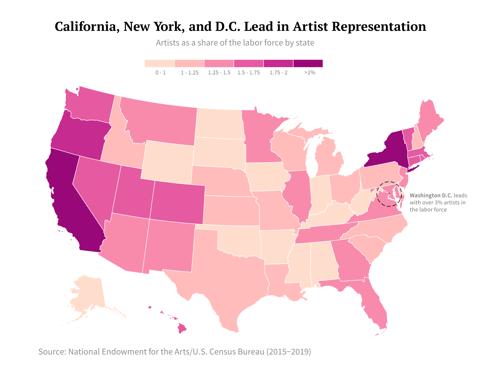
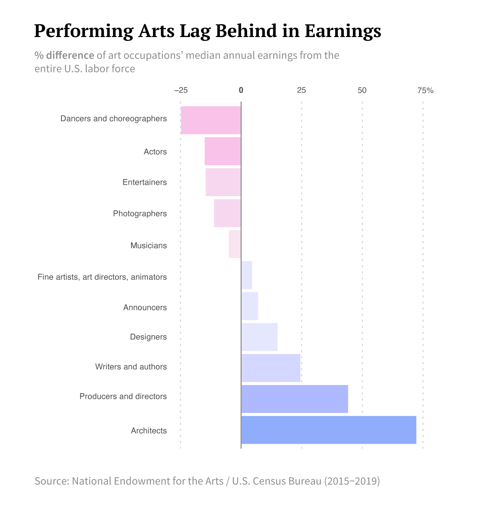
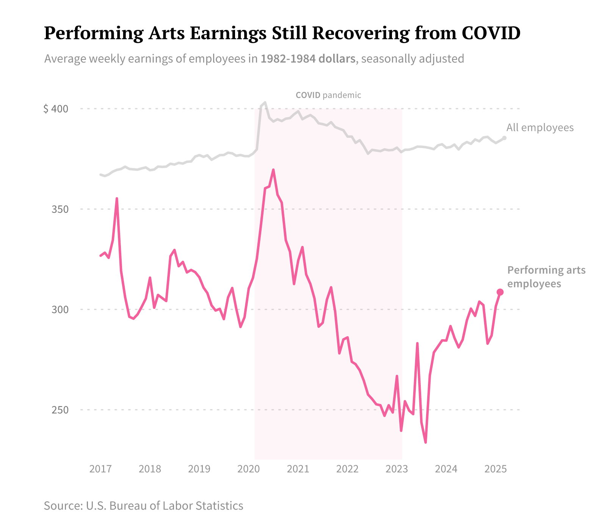

Artists in the United States |
Investigating the distribution and earnings of working artists across the country
Sophie Zhang
May 1 2025
Growing up near the California Bay Area, I was lucky to be surrounded by a range of artistic communities. In this environment, I developed interests across the visual and performing arts, and was able to engage in a wide range of artistic and cultural experiences. Concerts and museums were abundant and easily accessible. I often took these privileges for granted, especially considering how difficult it is to find success in the artistic world professionally. This piece investigates how artists spread themselves throughout the country, and to what extent they're supported financially across different artistic disciplines.
Employment in the arts varies significantly across the country. States with the highest artistic employment are those with well-known metropolitan and cultural centers. D.C.'s workforce has the highest proportion of artists at over 3%, while New York and California also boast high percentages at 2.4% and 2.2% respectively. Coastal states also generally contain higher artist populations.
Artist employment is also generally correlated with median household income. According to American Community Survey (ACS) 1-year estimates for 2023 median household income by state, D.C. has the highest household income, and other states with high artist employment: Massachusetts, Hawaii, California, Connecticut, Utah, Colorado, and Washington fall within the top 10 states for median household income (Source: ACS). This correlation led me to investigate financial trends in employed artists.
Clearly, not all artists are created equal despite concentrating in higher-income regions. The performing arts noticeably suffer when it comes to earnings. As of 2019, dancers, choreographers, actors, entertainers, and musicians all had smaller median incomes than that of the entire U.S. labor force.
Furthermore, performing artists are still recovering from the impact of the pandemic. While the average earnings for all employees have risen past pre-pandemic numbers, performing arts employees were drastically impacted by its offset and have not fully recovered financially.
Performers are fighting an uphill battle, and the economic crisis and unique circumstances induced by the pandemic certainly did not help. Thankfully, earnings in the performing arts are on their way up. And though many of us may never understand the difficulty of making it as an artist, we can all agree that the performing arts and the arts as a whole remain integral to the richness and depth of American society, evolving and adapting to changing times.